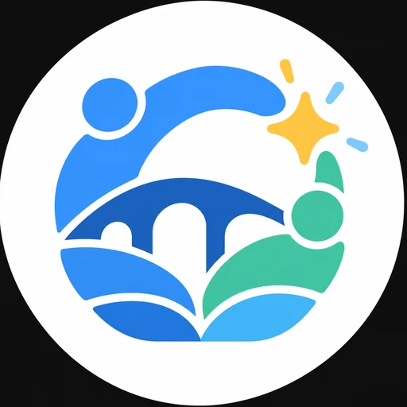
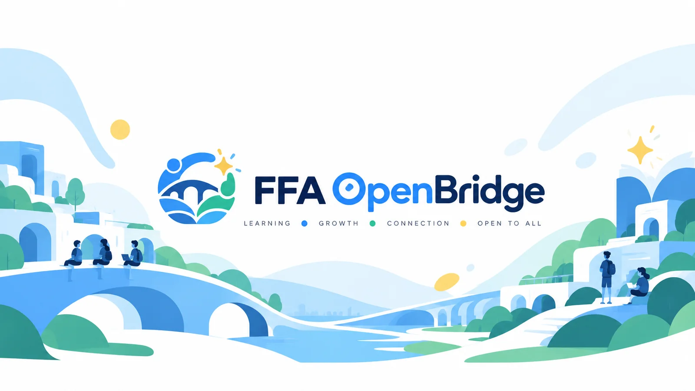

01
Digital Creation
Learn to think like a builder: break down problems, test ideas, and create projects using accessible technology.

FFA OpenBridgeStudent-led · Free · Online
OpenBridge connects younger learners with student tutors who explain ideas in a friendly, practical way—at no cost.

We have benefited from academic experience, supportive schools, and people willing to share what they know. OpenBridge is our way of passing that support forward.
We believe knowledge grows when it is shared. By offering our time and subject experience, we hope to help students with fewer educational opportunities build confidence, ask questions freely, and discover what they can do.
We are student tutors—not qualified adult teachers. That means we teach honestly, stay within what we know, prepare carefully, and ask for adult guidance when needed.
Programs
Subjects are grouped around skills that work together, so each session has a clear focus rather than feeling like a random list of topics.
Learn to think like a builder: break down problems, test ideas, and create projects using accessible technology.
Strengthen foundations, work through challenging questions, and connect methods to the science behind everyday life.
Explore different perspectives, form evidence-based arguments, and communicate ideas with clarity and confidence.
Who it’s for
OpenBridge is being designed for learners around ages 8–14+, especially those who have less access to extra academic support.
Friendly help with core ideas that may not have clicked yet.
Stretch questions and deeper topics for curious learners.
Guidance with reasoning, asking good questions, and explaining answers.
A calm space to practise without embarrassment or pressure.
Meet the team
Technology & science
An IGCSE student who brings coding, science, and creative problem-solving into practical lessons. Through independent app projects and school technical leadership, Kenta enjoys making complex ideas approachable and helping younger learners understand how things work.
Mathematics & science
Gao supports learners in mathematics and science, from building core foundations to exploring more challenging topics. His subject areas include core, general, and advanced mathematics, biology, physics, and general science.
Humanities, science & debate
Cooper enjoys humanities, science, and exploring different perspectives. With three years of debate training and experience in debate and Model United Nations, he brings research, clear communication, and critical thinking to friendly, easy-to-follow lessons.
How it works
OpenBridge is preparing to launch. This is the process we plan to use; final availability and scheduling will be confirmed with each family.
A parent, guardian, school, or learner registers interest and shares the subject, age range, and goal.
We match the topic to a tutor and say clearly if it is outside our experience or availability.
Session details are arranged through the approved parent, guardian, or school contact.
The learner joins a free, focused video session—planned through Google Meet—with clear goals and next steps.
Trust & transparency
Before bookings open, OpenBridge will publish a clear safeguarding process. These are the standards we are building around:
Scheduling and key communication for younger learners will include a parent, guardian, or responsible school contact.
No private social-media contact, no unnecessary personal information, and no recording without explicit agreement.
We will never claim adult teaching qualifications. If a topic is beyond us, we will say so.
Sessions are focused academic support. They do not replace school, professional teaching, or adult supervision.
Launch status: Interest stage. Final booking, consent, supervision, and reporting procedures are still being confirmed.
Questions
Yes. OpenBridge is being created as a free tutoring initiative. We do not plan to charge learners or families for sessions.
No. We are student tutors sharing subjects we know well. We will be transparent about our experience, stay within our limits, and direct learners to a teacher or specialist when appropriate.
We are primarily designing sessions for learners around ages 8–14+. The best fit will still depend on the subject, learner’s needs, safeguarding arrangements, and tutor availability.
Sessions are planned to be online, likely through Google Meet. The confirmed platform and joining details will be shared through the approved adult contact.
Not automatically. The list shows our subject areas, but we will check every request first. If a specific topic is beyond our current experience, we will be honest rather than guess.
Use the registration form below. When you submit it, your email app will open with the registration details ready to send to FFA OpenBridge.
Take the first step
Tell us what kind of support would help. Complete the form and we’ll prepare an email to FFA OpenBridge with the registration details.